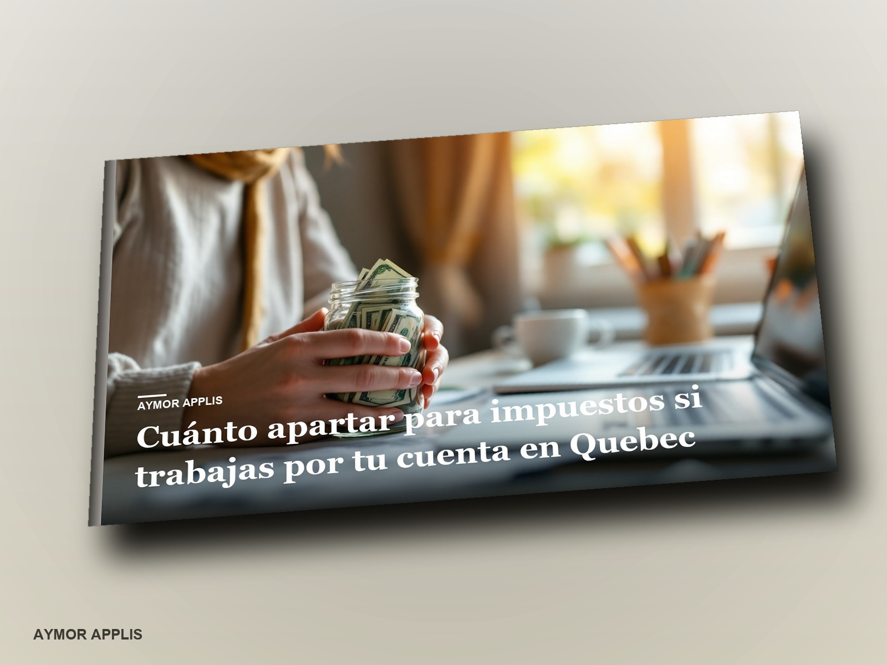

La cuenta completa que nadie te explica: impuesto federal, impuesto de Quebec, Régime de rentes, RQAP, Fonds des services de santé, TPS y TVQ. Con las cifras oficiales de 2026, la fórmula paso a paso, las tablas por nivel de ingreso, los acomptes provisionnels, los gastos que sí bajan la cuenta y cinco casos reales con números.
El botón se enciende cuando la dirección abra la tienda.